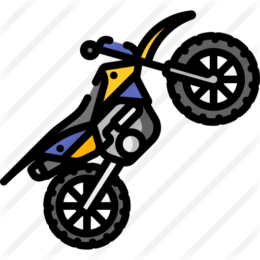

Mergulho
O mergulho pode te ajudar a cuidar da saúde e ainda por cima relaxar seu corpo e sua mente. A água do mar proporciona bem-estar e felicidade. Podendo adicionar a pescaria com arpão também.
Contato com a natureza.
Ténis de quadra
Além dos benefícios físicos, a autoestima, confiança e otimismo acabam sendo consequências da prática regular. É uma modalidade que emagrece sem o praticante perceber, só divertindo.
Esporte completo.
Viajar
Viajar é conhecer seus limites. Novas experiências podem te ajudar a encontrar o seu senso de propósito na vida. Viajar mantém seu coração saudável
Liberdade.
Acampar
Acampar é um estilo de viagem com uma experiência enriquecedora. Acampar possibilita um contato direto com a natureza conhecendo e vivenciado suas maravilhas desde paisagens, pássaros, flores, praias, montanhas e céus estrelados com harmonia e naturalidade.
Aventura.
Motocross
O motocross é um hobby e paixão onde a família toda pode se divertir. O sol e o ar fresco do lugar, durante a corrida, também eliminam o estresse. Levar a família para participar desses momentos vira uma forma de manter todos unidos.

Adrenalina e emoção.
Trilha
Além de aprender a ter mais contato e respeito com a natureza, quem faz trilha descobre outros benefícios, como melhorar a saúde física e mental, proporcionar bem-estar e qualidade de vida. Esse esporte possibilita superação de desafios.
Desafiador.